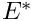
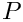
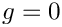
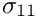
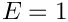
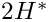
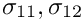
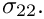

In this example we solve a classical solid mechanics problem, the bending of a cantilever beam, subject to a pressure loading on its upper face and/or gravity. We assume that the material behaves like a generalised Hookean solid with elastic modulus  and Poisson's ratio  Here is a sketch:
Here is a sketch:
This problem is interesting because it has an (approximate) St. Venant solution for the stress field which may be constructed in terms of an Airy stress function (see, e.g. H. Eschenauer & W. Schnell "Elastizitaetstheorie I", BI Wissenschaftsverlag, 2nd edition, 1986).
Results
The following figure shows an animation of beam's deformation in response to an increase in the uniform pressure, , at zero gravity, . The colour contours represent the magnitude of the "horizontal" component of the 2nd Piola-Kirchhoff stress tensor,  . Its approximately linear variation across the beam's thickness indicates a bending-type stress distribution with the stress being positive (tensile) at the top and negative (compressive) at the bottom.

The next figure shows a comparison of the computational predictions for (in green), and the approximate analytical solution (in red).
The agreement between the two solutions is excellent over most of the domain, apart from two small regions near the left end of the beam where stress singularities develop at the vertices of the domain. The singularities arise because the zero-tangential stress boundary condition on the top and bottom faces is inconsistent with the zero-displacement boundary condition on the left face. The singularities are not captured by the approximate analytical solution. oomph-lib's automatic mesh adaptation refines the mesh in an attempt to capture the rapid variations of the stresses in these regions.
Global parameters and functions
As usual, we define a namespace, Global_Physical_Variables, to define the problem parameters: the dimensions of the cantilever beam, (a pointer to) a constitutive equation, and its parameters  and .
and .
We refer to the document "Solid mechanics: Theory and implementation" for a detailed discussion of the non-dimensionalisation and merely recall that by setting , we imply that all stresses are non-dimensionalised with the structure's dimensional Young's modulus . Similarly, by setting the half-thickness of the beam to 0.5, we imply that the beam's dimensional thickness,  is used to non-dimensionalise all lengths.
Next, we define a function that defines the constant pressure load on the upper face of the cantilever,
and a gravitational body force, acting in the negative  -direction,
-direction,
The driver code
The driver code is very short. We start by building a GeneralisedHookean constitutive equation object and store a pointer to it in the namespace Global_Physical_Variables. Next we construct the problem object, using (a wrapped version of) oomph-lib's RefineableQPVDElement<2,3> – a nine-node quadrilateral displacement-based solid mechanics element. (The wrapper is used to change the element's output function; see Comment: Customising an element's output function for details).
The subsequent lines may be uncommented to experiment with different element types as suggested in the Exercises.
We initialise the load parameters and perform a parameter study in which we increment the pressure load in small steps. The gravitational body force remains switched off to allow the comparison with the analytical solution which only applies to the case with zero body force.
The problem class
The problem class contains the usual member functions, including separate access functions to the two sub-meshes: The "bulk" mesh that contains the 2D solid elements, and a separate mesh in which we store the 1D SolidTractionElements that apply the traction boundary condition on the beam's upper face. As usual, we remove these elements before adapting the bulk mesh and re-attach them afterwards, using the functions Problem::actions_before_adapt() and Problem::actions_after_adapt().
The creation/deletion of the SolidTractionElements is performed by private helper functions. We also store a pointer to a node on the tip of the beam and will record its displacement as a function of the applied load in a trace file.
The problem constructor
The constructor builds the bulk mesh (the standard RefineableRectangularQuadMesh that we already used in many previous examples, upgraded to a SolidMesh, via the procedure discussed in the document Solid mechanics: Theory and implementation), using the element type specified by the template parameter and the dimensions specified in the namespace Global_Physical_Variables.
We employ the Z2ErrorEstimator to assess the accuracy of the computed solution and to control the adaptive mesh refinement. When used with the RefineableQPVDElements, the Z2ErrorEstimator uses the components of Green's strain tensor as "fluxes" in its "flux recovery procedure".
Next, we pass the constitutive equations and the gravitational body force to the elements, select a control node, and perform one uniform mesh refinement.
We create a new mesh for the SolidTractionElements and build the elements using the helper function create_traction_elements() before adding both submeshes to the problem and combining them into a global mesh.
We pin the position of all nodes on the left boundary (boundary 3) of the bulk mesh. The subsequent call to PVDEquationsBase<2>::pin_redundant_nodal_solid_pressures() is unnecessary (but harmless) for the solid elements used in this driver code since RefineableQPVDElements do not contain pressure degrees of freedom. It is a good idea to include this call anyway since our problem class is templated by the element type and may therefore also be used with other elements (see Exercises ; we refer to another tutorial for a detailed discussion of the need to pin "redundant" pressure degrees of freedom in computations with spatial adaptivity.)
Finally, we assign the equation numbers, create a DocInfo object and open a trace file in which we shall record the beam's load/displacement characteristics.
Actions before adaptation
Following our usual procedure, we delete the SolidTractionElements before adapting the bulk mesh:
Actions after adaptation
The SolidTractionElements are re-attached after the mesh adaptation. Again, the call to PVDEquationsBase<2>::pin_redundant_nodal_solid_pressures() is not strictly necessary for the elements used in the present driver code but is included "for safety".
Setting the pointer to the traction function
The helper function set_traction_pt() is used to pass the pointer to the traction function to the SolidTractionElements.
Creating the traction elements
The helper function create_traction_elements() is used to create the SolidTractionElements and to store them in the appropriate sub-mesh.
Deleting the traction elements
The helper function delete_traction_elements() is used to delete the SolidTractionElements.
Post-processing
The post-processing function doc_solution() outputs the finite-element solution, using the modified output function defined in the wrapper class MySolidElement, discussed below.
Next we output the approximate St. Venant solution at the same plot points and write the load/displacement characteristics to the trace file.
Comments and exercises
Exercises
- Modify the driver code so that the cantilever beam is loaded by gravity rather than a pressure load. Consult the document "Solid mechanics: Theory and implementation" for details on the non-dimensionalisation of the body force. Verify that for modest deflections and for sufficiently thin beams, the macroscopic deformation due to a gravitational load is identical to that induced by an equivalent pressure load, equivalent meaning that the total force on the beam is the same for both cases.
- Change the element type to a
RefineableQPVDElementWithPressure<2>andRefineableQPVDElementWithContinuousPressure<2>and compare the results. Both of these two elements are based on a pressure-displacement formulation, the former employing a discontinuous pressure representation (as in Crouzeix-Raviart Navier-Stokes elements), the latter employing a continuous pressure representation (as in Taylor-Hood elements). Confirm that calls toPVDEquationsBase<2>::pin_redundant_nodal_solid_pressures()are essential if a continuous pressure representation is used. Explain the code's behaviour when you comment out the calls to this function.
- Repeat the computation without adaptivity, by using the non-refineable versions of the various solid mechanics elements discussed above, namely the
QPVDElement<2>,QPVDElementWithPressure<2>andQPVDElementWithContinuousPressure<2>. This will require various changes to the code:- You will have to create a solid mechanics version of the (non-refineable)
RectangularQuadMesh. This is necessary because non-refineable elements cannot be used with refineable meshes. Try it to find out why! [Note: You could, of course, use the existing driver code with its refineable mesh and the refineable elements and simply not use the adaptive capabilities by omitting themax_adaptargument when calling the Newton solver. However, the main point of this exercise is to force you to understand how to upgrade an existingMeshto aSolidMesh. It's easy: Simply follow the steps used to create a refineableSolidMeshfrom theRefineableRectangularQuadMesh, in src/meshes/rectangular_quadmesh.h. Instead of inheriting the mesh from theRefineableRectangularQuadMeshand theSolidMeshclasses, inherit from the non-refineableRectangularQuadMeshand theSolidMesh.] - You must not pass the pointer to the error estimator to the non-refineable mesh – it has no use for it.
- You cannot call the adaptive Newton solver.
- You will have to create a solid mechanics version of the (non-refineable)
Comment: Customising an element's output function
In the driver code discussed above we used the "wrapper" class MySolidElement to customise the solid elements' output function so that each element outputs its shape and the three independent components of the second Piola Kirchhoff stress,  and 
Here is the implementation: The "wrapping" element inherits from the element type specified by the template parameter and calls its constructor (recall that element constructors are always argument-free!).
We then overload the (virtual) output function so that the element outputs its shape, i.e. the  and
and  coordinates of its plot points, and the three independent components of the second Piola Kirchhoff stress at those points. Other than that, the element behaves exactly as the underlying "wrapped" element.
coordinates of its plot points, and the three independent components of the second Piola Kirchhoff stress at those points. Other than that, the element behaves exactly as the underlying "wrapped" element.
[Note: Since this element is only defined and used in a 2D driver code, there is little point in implementing the output for 1D or 3D elements. However, paranoid as we are, we check the dimension of the element and throw an error if it is wrong.]
Finally we declare that the FaceGeometry of the "wrapped" element is the same as that of the underlying element. This step is required to allow the automatic construction of SolidTractionElements in create_traction_elements().
Source files for this tutorial
- The source files for this tutorial are located in the directory:
demo_drivers/solid/airy_cantilever/
- The driver code is:
demo_drivers/solid/airy_cantilever/airy_cantilever.cc
PDF file
A pdf version of this document is available. \